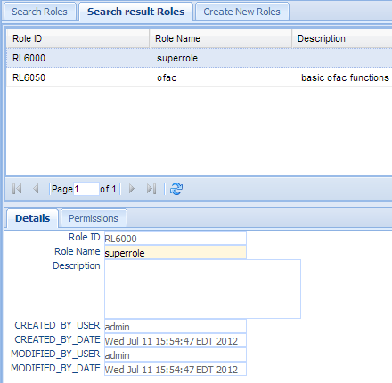
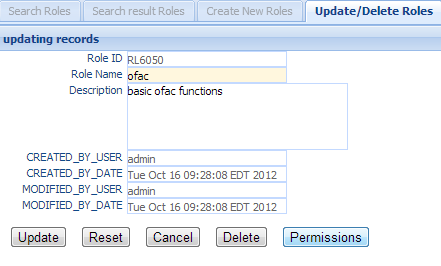
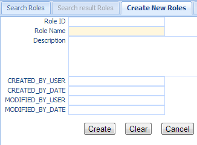

Roles¶
Roles are collections of one or more permissions. A role determines the functionality a user can access in the system. The administrator may grant several roles to users or to user groups. An administrator defines and maintains the security roles within the system and the permissions associated with each role. A role may be thought of as a job function that one of the users of the system may use. For example, Alert Investigator, Supervisor, List administrator, and so on. When role is assigned to users or groups, it must also specify an Organizational Unit. A user can have a role A in Organization Unit X and role B in Organization Unit Y.
Click the Roles in the left navigation menu under Administration, a new Roles Tab folder will be created in the right panel. There are 3 sub-Tab folders: Search Roles, Search Result Roles and Create New Roles.

Search Roles¶
Search Criteria
| Field Name | Description |
|---|---|
| Role ID | Unique record identifier. |
| Role Name | Name of this role. |
| Description | Description of this role. |
| CreatedByDate | Date and Time when this entry was created. |
| CreatedByUser | User who created this entry. |
| ModifiedByDate | Last modified date and time. |
| ModifiedByUser | Last modified user. |
| AND | Select AND radio box if you want those criteria add together. |
| OR | Select OR radio box if you want to get the result if either of the criteria is met. |
Functional buttons¶
- Find: – click the Find button to search.
- Clear:– click the Clear button to clear all the criteria.
Search Result Roles¶
The top part is the table which shows the list of the roles that meet the search criteria. The bottom part is the details and permissions of the selected entry.
Each entry can have 0 to many permissions. (see Permissions for details on Permissions)
Update/Delete Roles¶
Double Click the selected record in the table to modify this entry. A new tab folder “Update/Delete Roles” will be added, as shown below.
Functional buttons¶
- Update: – Make changes on the roles and save and switch back to “Search result roles” Tab. Some of the fields in this form are read only, like role Id, created/modified user, and date.
- Reset:– Reset the data to its initial value, discard all the changes.
- Cancel:– Cancel this change and switch back to “Search result roles” Tab.
- Permissions:– Assign permissions to the role. Clicking this button will open a pop window, as follows;
Grant or revoke the permission to the role by checking or unchecking the checkbox besides each permission.
- Update – Click the Update button to update the changes and close the popup window.
- Reset – Reset the data to its initial value, discard all the changes.
- Cancel –Cancel this change and close the popup window.
- Delete:– Delete this entry and switch back to “Search result roles” Tab.
Create New Roles¶
Select the “Create New Roles” Tab to create a new entry.
| Field Name | Description |
|---|---|
| Role ID | Unique record identifier. |
| Role Name | Name of this role |
| Description | Description of this role |
| CreatedByDate | Date and Time when this roles entry was created. It is a read only field. |
| CreatedByUser | User who created this this roles entry. It is a read only field. |
| ModifiedByDate | Last modified date and time; It is a read only field. |
| ModifiedByUser | Last modified user; It is a read only field. |
Functional buttons¶
- Create: – Click the Create button to create a new roles entry and switch to “Search result Roles” Tab.
- Clear:– Click the Clear button to clear all the fields
- Cancel:– Click the Cancel button to cancel operation and switch back to “Search result roles” Tab.